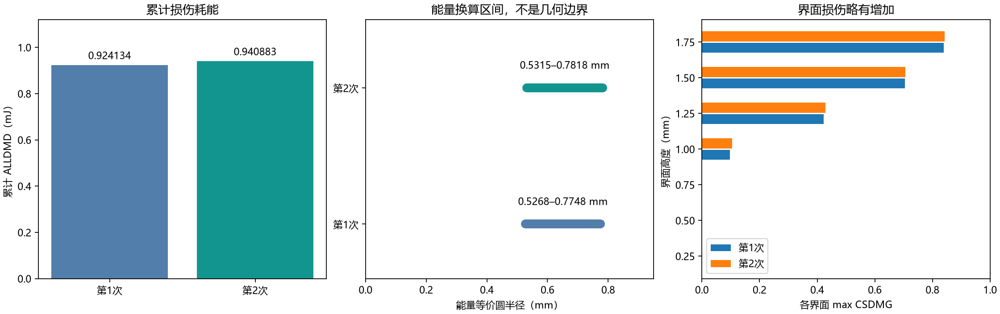
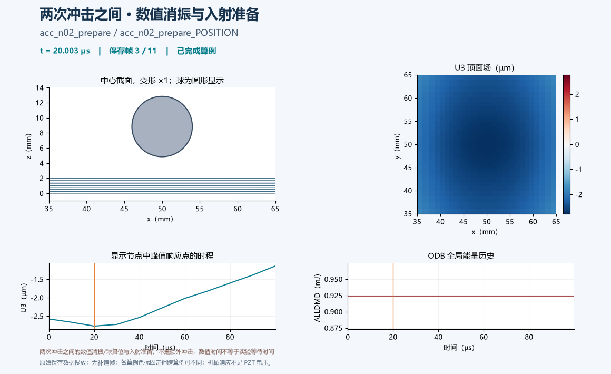
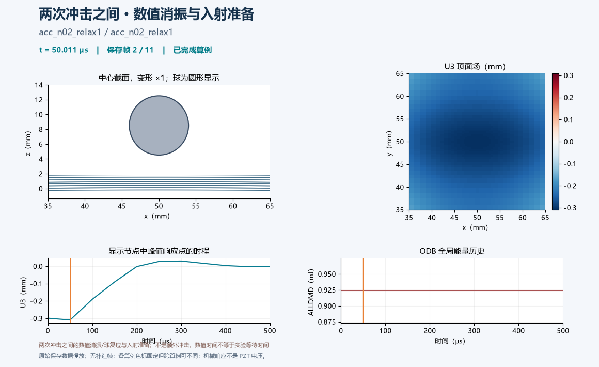
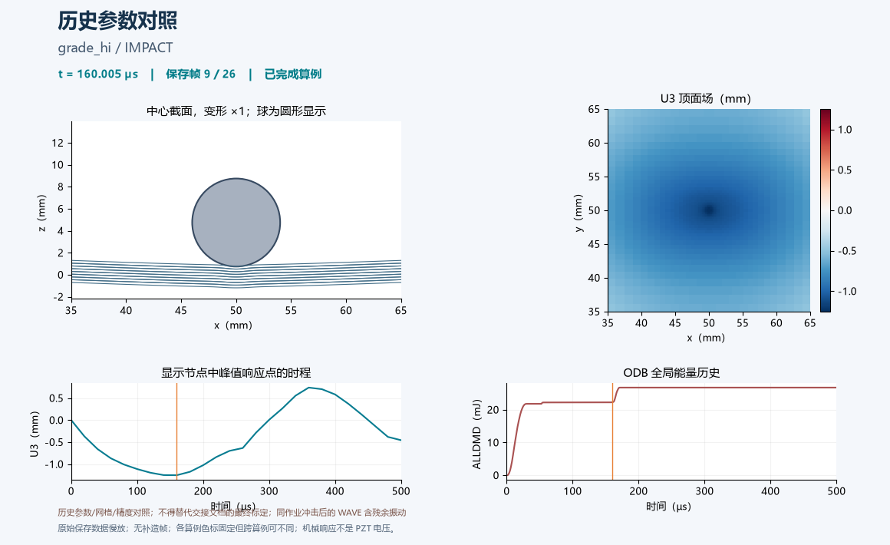
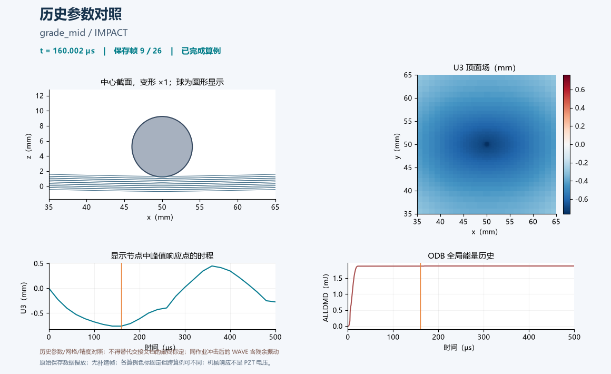
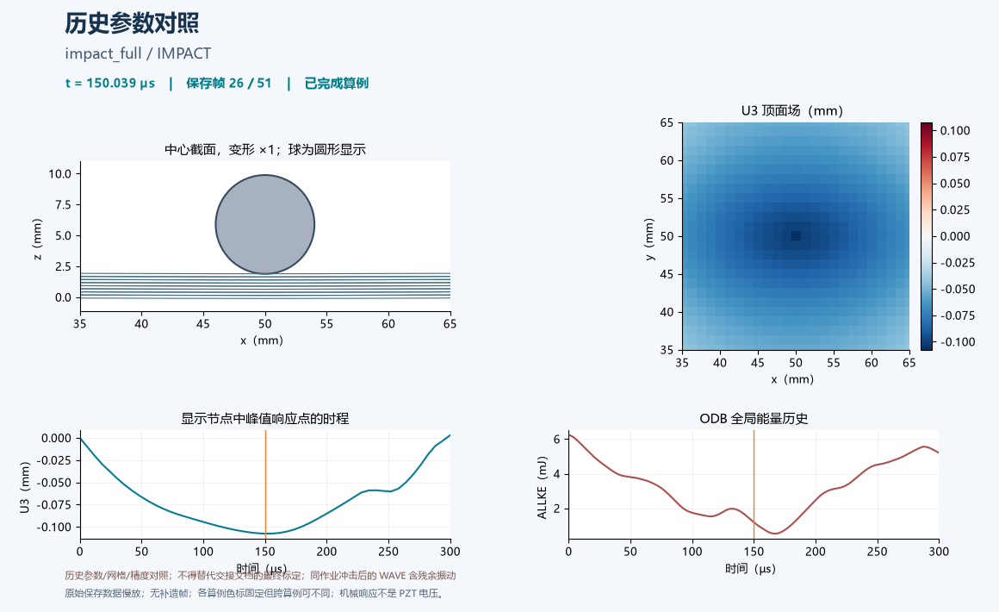
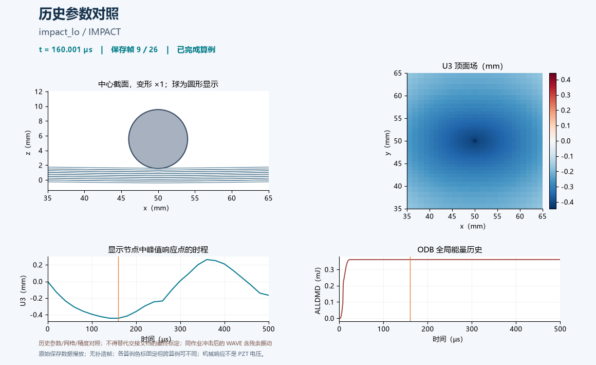
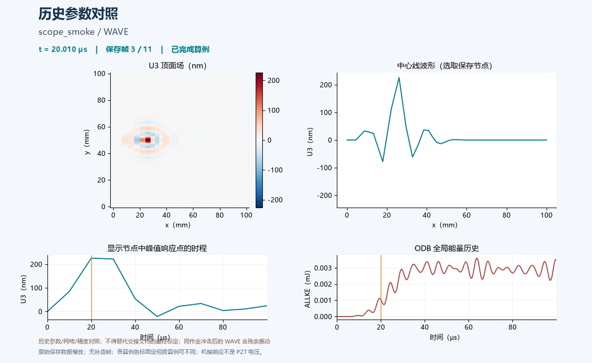
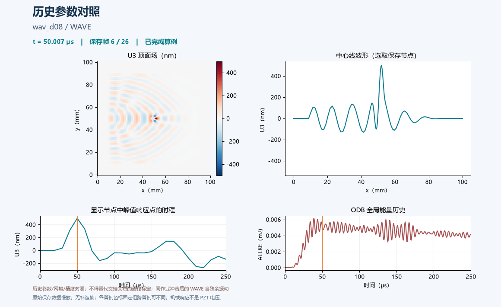
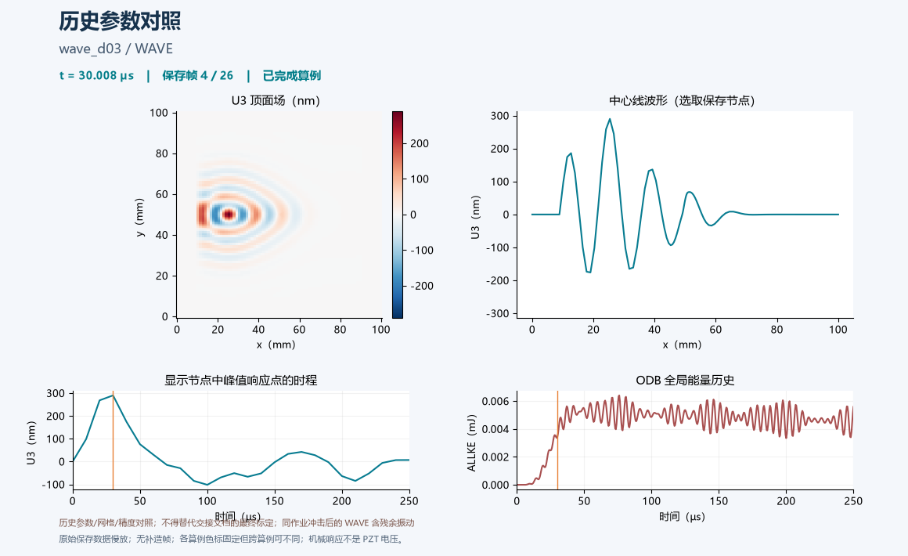

{kind=link}
{kind=link}
{kind=link}
{kind=link}
{kind=link}
{kind=link}
{kind=link}
{kind=link}
{kind=link}
{kind=link}
{kind=link}
{kind=link}
{kind=link}
{kind=link}
{kind=link}
{kind=link}
{kind=link}
{kind=link}
{kind=link}
{kind=link}
{kind=link}
{kind=link}
{kind=link}
{kind=link}
{kind=link}
{kind=link}
{kind=link}
{kind=link}
{kind=link}
{kind=link}
{kind=link}
{kind=link}
{kind=link}
{kind=link}
{kind=link}
accum_030j_3/acc_n01

点击封面播放；打开 GIF
正式累积序列第1次；尚不能代表三次累积完成
本报告对应未上传清单中的 107 个文件，合计 87.350 GiB，归属于 35 个 Abaqus 作业。同一作业的 ODB 与续算文件不重复算成独立试验。
文件构成为 30 个 ODB、35 个 ABQ、31 个 PAC、11 个 STT。ODB 提供可读回的场/历史结果；其余为求解器状态与打包辅助文件等，不逐个制作重复动画。报告以同名 ODB 的导出数据、已校验结果 JSON 和权威交接文档为依据，并未把内部状态文件当成独立物理结果重新求解。
交付：34 个作业 GIF + 1 个两次冲击全过程汇总 GIF，共 35 个 GIF。 原始文件保持不变；这些紧凑成果不能替代 ODB 和 restart 原始状态，也不能单凭 GIF 在云端续算。
两次同点约 0.300 J 落球均完成，第三次未运行。累计 ALLDMD 从 0.924134 增至 0.940883 mJ，第二次新增 0.016749 mJ，相对增加 1.81%。这是当前数值模型下的小幅累积，不能凭两次结果认定损伤饱和，也不能外推实际疲劳寿命。
播放两次冲击全过程：第1次冲击 → 数值消振 → 球复位 → 入射速度准备 → 第2次冲击。段落保留各分析步的局部物理时间；各段以同样帧播放时长展示，不意味着真实等待时间相同。

| 次数 | 累计 ALLDMD / mJ | 本次增量 / mJ | 能量等价半径 / mm | 峰值力 / N | 最大向下位移 / µm | 反弹比 |
| 1 | 0.924134 | 0.924134 | 0.5268–0.7748 | 568.595 | 782.126 | 0.77024 |
| 2 | 0.940883 | 0.016749 | 0.5315–0.7818 | 569.776 | 781.001 | 0.77016 |
数据来源：simulation_reproduction/impact_wave_3d/repeat_impact_summary.json，由 Abaqus ODB 读数器完成全阶段连续性与能量检查；本报告复用已校验的数值，不把 GIF 抽帧峰值代替历史输出峰值。
两次冲击后均有 4 个受损界面。下面面积是节点控制面积的阈值估计，各界面不可简单视为同一圆形损伤区。
| 界面高度 / mm | 第1次 max D | 第2次 max D | 第1次 D>0.01 面积 / mm² | 第2次 D>0.01 面积 / mm² | 第2次最远受损半径 / mm |
| 0.250 | 0.000000 | 0.000000 | 0.000000 | 0.000000 | 0.000000 |
| 0.500 | 0.000000 | 0.000000 | 0.000000 | 0.000000 | 0.000000 |
| 0.750 | 0.000000 | 0.000000 | 0.000000 | 0.000000 | 0.000000 |
| 1.000 | 0.097849 | 0.104173 | 1.287485 | 1.327436 | 1.259346 |
| 1.250 | 0.422423 | 0.428260 | 4.601174 | 4.601174 | 1.507201 |
| 1.500 | 0.704295 | 0.705353 | 4.998386 | 4.998386 | 1.507201 |
| 1.750 | 0.839708 | 0.842768 | 5.092942 | 5.092942 | 1.507201 |
两次冲击的 D≥0.95 面积均为 0；存在局部部分损伤，并不等于出现完全断开的圆孔。第二次主要体现既有区域的损伤程度增加，1.000 mm 界面的阈值面积略有扩展。
消振末段板机械能为 1.56146e-5 J、最大速度 0.0226034 m/s，通过所设静止判据。消振、复位和入射准备三个阶段 ALLDMD 增量均为 0；不能把球准备过程的动能增长误认为板损伤增长。
- 当前单次标定 imp_lo / imp_mid / imp_hi：0.100 / 0.300 / 0.794 J，交接文档记录 ALLDMD 约 0.0966 / 0.9267 / 15.11 mJ；用于单次能量对照，不是三次累积。
- 当前导波 wav_base / wav_d03_r08 / wav_d08_r31：无损、0.8 mm、3.1 mm 预置脱黏对照；交接文档记录两档 R1/R2 为 0.0547/0.0463 与 1.50/1.33。这些导波不是第二轮冲击后新跑的结果。
- grade_*、impact_*、wave_*、wav_d03 / wav_d08 等为早期网格或参数对照；旧半径导波不能替代修正半径版本。
- kdef / kply_* / ksoft、scope_* 为界面刚度、接触范围和数值稳定性对照。默认刚度的失稳机制仍未查清；成功结束不等于物理或数值验收合格。
- interrupted_20260923_133902/acc_n02_relax1 是中断归档，仅作诊断；对应完整消振作业位于父目录，已另列动画。
- grade 虽有求解成功标记，但仅有不足两帧的场输出，无法制作真实过程 GIF。未伪造动画。
材料强度、断裂能采用有出处的替代值：朱国华等，复合材料学报 40(6), 3626–3639 (2023)，DOI 10.13801/j.cnki.fhclxb.20220720.002；并非本试件实测标定。接触型黏聚刚度显式取 2.37e13 Pa/m。
冲击应力场未收敛，界面刚度带来约两倍面积敏感性；未与实物实验验证。数值消振参数与静止判据为工程假设，阻尼敏感性尚未完成。小半径导波存在冲击 4 个受损界面与导波 5 个预置界面的映射差异。
ALLDMD/Gc 得到跨界面汇总的完全断裂能量等价面积；部分损伤也贡献耗能。因此等价圆半径区间不是几何损伤半径的严格上下界，不能复制到每一个界面。
GIF 仅展示已保存数值场，最多选取每步 51 帧、每帧 150 ms；导波场可能抽取显示节点。单段色标固定，跨图/跨段可能不同。位移场和能量不是 PZT 电压；多段拼接只用于展示，不会生成新的物理解。
数值列来自各步已导出的 ODB 历史/场记录。U3 峰值仅指抽取帧与显示顶面节点中的最大绝对值，不是严格全场或冲击中心时程峰值。
| 作业（目录用于区分重名） | 大文件数 | GiB | 状态 | 过程 GIF |
| accum_030j_3/acc_n01 | 4 | 4.477 | 求解完成 | 播放 |
| accum_030j_3/acc_n02 | 4 | 7.129 | 求解完成 | 播放 |
| impact/imp_hi | 4 | 2.609 | 求解完成 | 播放 |
| impact/imp_lo | 4 | 2.609 | 求解完成 | 播放 |
| impact/imp_mid | 4 | 2.609 | 求解完成 | 播放 |
| impact/wav_base | 3 | 2.319 | 求解完成 | 播放 |
| impact/wav_d03_r08 | 3 | 2.318 | 求解完成 | 播放 |
| impact/wav_d08_r31 | 3 | 2.320 | 求解完成 | 播放 |
| accum_030j_3/acc_n02_prepare | 4 | 5.842 | 求解完成 | 播放 |
| accum_030j_3/acc_n02_relax1 | 4 | 3.454 | 求解完成 | 播放 |
| impact/grade_hi | 3 | 2.538 | 求解完成 | 播放 |
| impact/grade_lo | 3 | 2.538 | 求解完成 | 播放 |
| impact/grade_mid | 3 | 2.538 | 求解完成 | 播放 |
| impact/impact_big | 3 | 2.097 | 求解完成 | 播放 |
| impact/impact_dmg | 3 | 2.097 | 求解完成 | 播放 |
| impact/impact_full | 3 | 2.097 | 求解完成 | 播放 |
| impact/impact_hi | 4 | 4.126 | 求解完成 | 播放 |
| impact/impact_lo | 4 | 4.126 | 求解完成 | 播放 |
| impact/impact_mid | 4 | 4.126 | 求解完成 | 播放 |
| impact/kdef | 3 | 2.091 | 求解完成 | 播放 |
| impact/kply_ply | 3 | 2.091 | 求解完成 | 播放 |
| impact/kply_smoke | 1 | 0.361 | 求解完成 | 播放 |
| impact/kply_stiff | 3 | 2.091 | 求解完成 | 播放 |
| impact/ksoft | 3 | 2.091 | 求解完成 | 播放 |
| impact/scope_impact | 3 | 0.713 | 求解完成 | 播放 |
| impact/scope_smoke | 1 | 0.361 | 求解完成 | 播放 |
| impact/wav_d03 | 3 | 2.320 | 求解完成 | 播放 |
| impact/wav_d08 | 3 | 2.322 | 求解完成 | 播放 |
| impact/wave_base | 3 | 2.317 | 求解完成 | 播放 |
| impact/wave_d03 | 3 | 2.318 | 求解完成 | 播放 |
| impact/wave_d08 | 3 | 2.320 | 求解完成 | 播放 |
| impact/wave_dp | 1 | 0.373 | 求解完成 | 播放 |
| impact/wave_smoke | 1 | 0.231 | 求解完成 | 播放 |
| interrupted_20260923_133902/acc_n02_relax1 | 4 | 2.817 | 中断/未完成 | 播放 |
| impact/grade | 2 | 0.562 | 求解完成 | 缺少过程帧 |
| 作业 / 分析步 | 物理时间范围 / µs | 显示帧 / 保存帧 | ALLDMD 末值 / mJ | 抽样顶面 max abs U3 / µm |
| accum_030j_3/acc_n01 / IMPACT | 0.000–500.000 | 51/51 | 0.924134 | 781.058 |
| accum_030j_3/acc_n02 / acc_n02 | 0.000–500.000 | 51/51 | 0.940883 | 780.416 |
| impact/imp_hi / IMPACT | 0.000–500.000 | 26/26 | 15.1088 | 1272.82 |
| impact/imp_lo / IMPACT | 0.000–500.000 | 26/26 | 0.0966118 | 455.179 |
| impact/imp_mid / IMPACT | 0.000–500.000 | 26/26 | 0.926688 | 781.064 |
| impact/wav_base / WAVE | 0.000–250.000 | 26/26 | 0 | 0.333109 |
| impact/wav_d03_r08 / WAVE | 0.000–250.000 | 26/26 | 0 | 0.333232 |
| impact/wav_d08_r31 / WAVE | 0.000–250.000 | 26/26 | 0 | 0.453944 |
| accum_030j_3/acc_n02_prepare / acc_n02_prepare_POSITION | 0.000–100.000 | 11/11 | 0.924134 | 2.76965 |
| accum_030j_3/acc_n02_prepare / acc_n02_prepare_LAUNCH | 0.000–50.000 | 11/11 | 0.924134 | 1.13942 |
| accum_030j_3/acc_n02_relax1 / acc_n02_relax1 | 0.000–500.000 | 11/11 | 0.924134 | 309.015 |
| impact/grade_hi / IMPACT | 0.000–500.000 | 26/26 | 26.7344 | 1251.87 |
| impact/grade_lo / IMPACT | 0.000–500.000 | 26/26 | 0.358094 | 442.965 |
| impact/grade_mid / IMPACT | 0.000–500.000 | 26/26 | 1.87999 | 760.786 |
| impact/impact_big / IMPACT | 0.000–700.000 | 51/51 | 1.3295 | 1208.11 |
| impact/impact_dmg / IMPACT | 0.000–700.000 | 51/51 | 0 | 169.995 |
| impact/impact_full / IMPACT | 0.000–300.000 | 51/51 | 0 | 107.587 |
| impact/impact_hi / IMPACT | 0.000–500.000 | 26/26 | 30.2519 | 1253.48 |
| impact/impact_hi / WAVE | 0.000–250.000 | 26/26 | 30.2519 | 652.069 |
| impact/impact_lo / IMPACT | 0.000–500.000 | 26/26 | 0.361339 | 442.916 |
| impact/impact_lo / WAVE | 0.000–250.000 | 26/26 | 0.361339 | 235.702 |
| impact/impact_mid / IMPACT | 0.000–500.000 | 26/26 | 1.90354 | 760.86 |
| impact/impact_mid / WAVE | 0.000–250.000 | 26/26 | 1.90354 | 406.092 |
| impact/kdef / WAVE | 0.000–100.000 | 11/11 | 0 | 0.333109 |
| impact/kply_ply / WAVE | 0.000–100.000 | 11/11 | 0 | 0.3388 |
| impact/kply_smoke / WAVE | 0.000–20.000 | 5/5 | 0 | 0.230848 |
| impact/kply_stiff / WAVE | 0.000–100.000 | 11/11 | 0 | 0.286663 |
| impact/ksoft / WAVE | 0.000–100.000 | 11/11 | 0 | 0.932782 |
| impact/scope_impact / IMPACT | 0.000–120.000 | 7/7 | 0 | 693.538 |
| impact/scope_impact / WAVE | 0.000–250.000 | 26/26 | 0 | 749.037 |
| impact/scope_smoke / WAVE | 0.000–100.000 | 11/11 | 0 | 0.225991 |
| impact/wav_d03 / WAVE | 0.000–250.000 | 26/26 | 0 | 0.333236 |
| impact/wav_d08 / WAVE | 0.000–250.000 | 26/26 | 0 | 0.498078 |
| impact/wave_base / WAVE | 0.000–250.000 | 26/26 | 0 | 0.290245 |
| impact/wave_d03 / WAVE | 0.000–250.000 | 26/26 | 0 | 0.290128 |
| impact/wave_d08 / WAVE | 0.000–250.000 | 26/26 | 0 | 0.332286 |
| impact/wave_dp / WAVE | 0.000–100.000 | 11/11 | 0 | 0.226716 |
| impact/wave_smoke / WAVE | 0.000–100.000 | 11/11 | 0 | 0.227805 |
| interrupted_20260923_133902/acc_n02_relax1 / acc_n02_relax1 | 0.000–300.000 | 7/7 | 0.924134 | 309.015 |
large_file_manifest.json 覆盖每一个待上传大文件及其所属作业、原始路径、大小、GIF 和读数来源；repeat_impact_summary.json 保存本轮正式读数副本。HTML 报告可直接播放动画，Markdown 便于其他 agent 引用。原始 87.35 GiB 文件仍保留本地，未删除或压缩替代。
点击封面播放；打开 GIF
正式累积序列第1次；尚不能代表三次累积完成
点击封面播放；打开 GIF
正式累积冲击；次数取作业编号，完成范围以当前结果汇总为准

点击封面播放；打开 GIF
显式黏聚刚度 2.37e13 下的单次标定；应力场未收敛、材料为替代参数

点击封面播放；打开 GIF
显式黏聚刚度 2.37e13 下的单次标定；应力场未收敛、材料为替代参数

点击封面播放；打开 GIF
显式黏聚刚度 2.37e13 下的单次标定；应力场未收敛、材料为替代参数

点击封面播放；打开 GIF
修正半径后的导波；机械位移而非电压；0.8 mm 档仍有4/5受损界面映射差异

点击封面播放；打开 GIF
修正半径后的导波；机械位移而非电压；0.8 mm 档仍有4/5受损界面映射差异

点击封面播放；打开 GIF
修正半径后的导波；机械位移而非电压；0.8 mm 档仍有4/5受损界面映射差异

点击封面播放；打开 GIF
两次冲击之间的数值消振/球复位与入射准备；不是额外冲击，数值时间不等于实验等待时间

点击封面播放；打开 GIF
两次冲击之间的数值消振/球复位与入射准备；不是额外冲击，数值时间不等于实验等待时间

点击封面播放；打开 GIF
历史参数/网格/精度对照；不得替代交接文档的最终标定；同作业冲击后的 WAVE 含残余振动

点击封面播放；打开 GIF
历史参数/网格/精度对照；不得替代交接文档的最终标定；同作业冲击后的 WAVE 含残余振动

点击封面播放；打开 GIF
历史参数/网格/精度对照；不得替代交接文档的最终标定；同作业冲击后的 WAVE 含残余振动

点击封面播放；打开 GIF
历史参数/网格/精度对照；不得替代交接文档的最终标定；同作业冲击后的 WAVE 含残余振动

点击封面播放；打开 GIF
历史参数/网格/精度对照；不得替代交接文档的最终标定；同作业冲击后的 WAVE 含残余振动

点击封面播放；打开 GIF
历史参数/网格/精度对照；不得替代交接文档的最终标定；同作业冲击后的 WAVE 含残余振动
点击封面播放；打开 GIF
历史参数/网格/精度对照；不得替代交接文档的最终标定；同作业冲击后的 WAVE 含残余振动

点击封面播放；打开 GIF
历史参数/网格/精度对照；不得替代交接文档的最终标定；同作业冲击后的 WAVE 含残余振动

点击封面播放；打开 GIF
历史参数/网格/精度对照；不得替代交接文档的最终标定；同作业冲击后的 WAVE 含残余振动

点击封面播放；打开 GIF
历史参数/网格/精度对照；不得替代交接文档的最终标定；同作业冲击后的 WAVE 含残余振动

点击封面播放；打开 GIF
历史参数/网格/精度对照；不得替代交接文档的最终标定；同作业冲击后的 WAVE 含残余振动

点击封面播放；打开 GIF
历史参数/网格/精度对照；不得替代交接文档的最终标定；同作业冲击后的 WAVE 含残余振动

点击封面播放；打开 GIF
历史参数/网格/精度对照；不得替代交接文档的最终标定；同作业冲击后的 WAVE 含残余振动

点击封面播放；打开 GIF
历史参数/网格/精度对照；不得替代交接文档的最终标定；同作业冲击后的 WAVE 含残余振动

点击封面播放；打开 GIF
历史参数/网格/精度对照；不得替代交接文档的最终标定；同作业冲击后的 WAVE 含残余振动

点击封面播放；打开 GIF
历史参数/网格/精度对照；不得替代交接文档的最终标定；同作业冲击后的 WAVE 含残余振动

点击封面播放；打开 GIF
历史参数/网格/精度对照；不得替代交接文档的最终标定；同作业冲击后的 WAVE 含残余振动

点击封面播放；打开 GIF
历史参数/网格/精度对照；不得替代交接文档的最终标定；同作业冲击后的 WAVE 含残余振动
点击封面播放；打开 GIF
历史参数/网格/精度对照；不得替代交接文档的最终标定；同作业冲击后的 WAVE 含残余振动

点击封面播放；打开 GIF
历史参数/网格/精度对照；不得替代交接文档的最终标定；同作业冲击后的 WAVE 含残余振动

点击封面播放；打开 GIF
历史参数/网格/精度对照；不得替代交接文档的最终标定；同作业冲击后的 WAVE 含残余振动

点击封面播放；打开 GIF
历史参数/网格/精度对照；不得替代交接文档的最终标定；同作业冲击后的 WAVE 含残余振动

点击封面播放；打开 GIF
历史参数/网格/精度对照；不得替代交接文档的最终标定；同作业冲击后的 WAVE 含残余振动

点击封面播放；打开 GIF
未完成，仅供诊断；不得作为完整结果；中断归档，终止原因未定